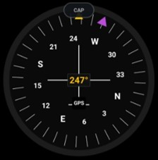
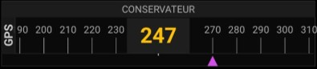

Possibilités
- Affiche le cap courant (magnétique ou route GPS, selon Réglages).
- Cap à suivre matérialisé par un curseur / bug magenta.
- Curseur jaune (triangle) à l'index du haut : repère fixe du cap courant, identique à l'index de ANLCCT.
- Pastille de titre affichée en haut du cadran (masquable via Options ▸ « Masquer le titre »).
- Version numérique : bande défilante + valeur en gros dans une cellule orange.
Gestes supportés
Appui long : saisir le cap à suivre
Double-tap : —
Réglages liés
- Source du cap : magnétique / route GPS (onglet Cockpits).
- Étalonnage du compas : l'offset de compensation ne s'applique qu'en mode magnétique ; en mode route GPS le cap suit le relèvement GPS brut. Le dialogue d'étalonnage affiche le cap GPS, le cap magnétique et l'écart signé, avec les boutons Compenser / Calibrer / Ignorer.
ANLCAP

NUMCAP
